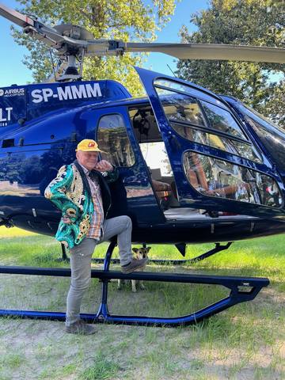

Imperium Gzowiańskie
Pięć wariantów wyglądu
Ta sama działka w pięciu stylach, z przykładowym kawałkiem gry: tura gracza, kurs Gzowium, Ośmiornica i karta z paka. Kliknij miniaturę, żeby zmienić styl. Przeciągnij po działce, żeby ją obrócić.
Tura: Rysio340 000 szyszek
GZOWIUM 12 400▲ 8%
OśmiornicaRysio wchodzi na Plażę Jurka. Dwa domki, więc 60 tysięcy szyszek poproszę.

HelikopterLegendarna
Leć na dowolne pole planszy.
Możesz też powiedzieć „2, ale z kolorami z 1” albo „coś pomiędzy 1 i 5”. Układ działki, pola i interfejs są tu tylko przykładem, wybierasz sam klimat.